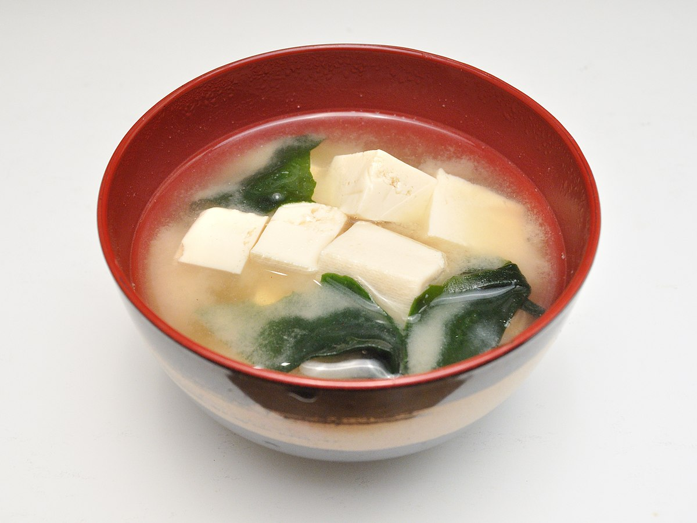

Home
Miso Soup

Easy Miso
This miso soup is full of savory flavors. Add more dashi to your soup if you want a stronger stock. You can use yellow, white, or red miso paste for this soup — yellow miso is sweet and creamy, red miso is stronger and saltier.
Ingredients
- 4 cups of water
- 4 teaspoons of dashi Granules
- 3 tablespoons of Miso paste
- 1 package of silken tofu, diced
- 2 green onions, sliced
Steps:
- Combine water and dashi granules in a medium saucepan over medium-high heat; bring to a boil.
- Reduce heat to medium and whisk in miso paste.
- Stir in tofu.
- Separate the layers of green onions, and add them to the soup.
- Simmer gently for 2 to 3 minutes before serving.
- Enjoy!